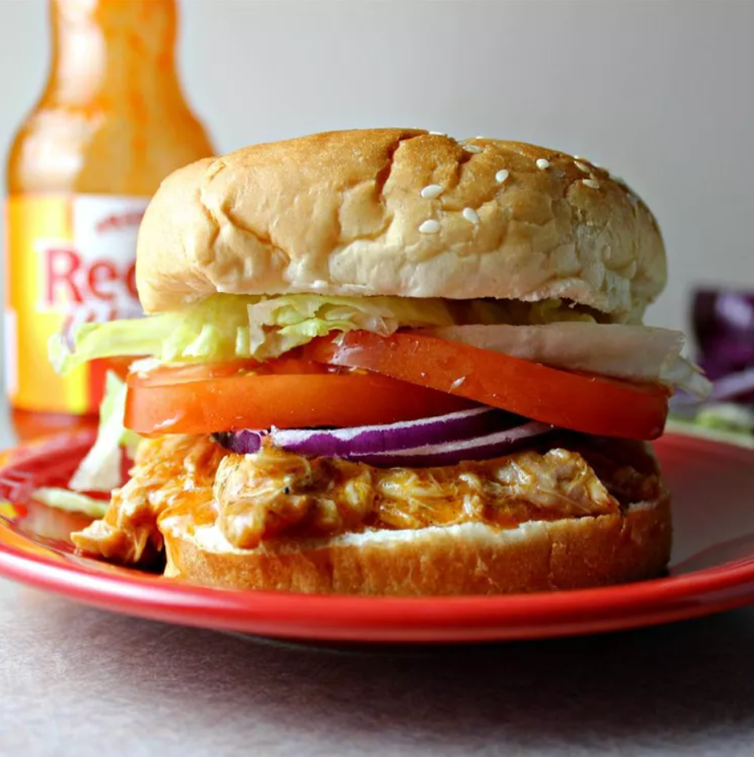

Buffalo Chicken Sandwhiches

This crockpot Buffalo chicken is great for hearty sandwiches that will please those who love Buffalo chicken wings. This recipe is perfect for those days spent watching football. I like to top these with blue cheese or ranch dressing.
Recipe for Buffalo Chicken Sandwiches